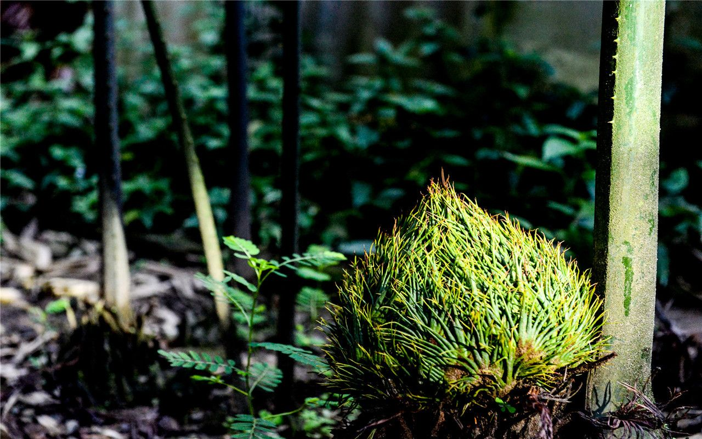

📇
基础名片
Basic Info
多歧苏铁
学名：Cycas multipinnata
科属：苏铁科苏铁属
保护级别：濒危（EN）、国家一级重点保护野生植物
学名：Cycas multipinnata
科属：苏铁科苏铁属
保护级别：濒危（EN）、国家一级重点保护野生植物
🌿
形态特征
Morphology
形态特征
茎：茎干短矮，常半埋土中，高一般<40cm，直径20–40cm；
叶：茎顶常1–3枚大型三回羽状复叶，第三回羽片可3–6次二叉分歧；小羽片线状披针形、尾尖，羽叶总长可达数米；
球花与种子：雄球花圆柱形、黄色；雌球花近球形；种子近球形、淡黄色；花期4–5月，种子8–9月成熟。
茎：茎干短矮，常半埋土中，高一般<40cm，直径20–40cm；
叶：茎顶常1–3枚大型三回羽状复叶，第三回羽片可3–6次二叉分歧；小羽片线状披针形、尾尖，羽叶总长可达数米；
球花与种子：雄球花圆柱形、黄色；雌球花近球形；种子近球形、淡黄色；花期4–5月，种子8–9月成熟。
🌱
生长环境
Habitat
生长环境
产地：中国云南特有，主要集中在红河州（个旧、屏边、金平、河口）及文山州（西畴），越南北部亦有分布；
特有：中国特有单种属（或特有种），对生境要求极其苛刻；
生境：石灰岩山地常绿阔叶林下或热带季雨林深处，依赖湿润、阴凉的微环境；
海拔：150-1100m；
物候：花两性，单生枝顶；花期4-5月，种子10-11月成熟；
产地：中国云南特有，主要集中在红河州（个旧、屏边、金平、河口）及文山州（西畴），越南北部亦有分布；
特有：中国特有单种属（或特有种），对生境要求极其苛刻；
生境：石灰岩山地常绿阔叶林下或热带季雨林深处，依赖湿润、阴凉的微环境；
海拔：150-1100m；
物候：花两性，单生枝顶；花期4-5月，种子10-11月成熟；
💊
价值作用
Value
价值作用
观赏价值:
株型古朴壮观，叶片独特，是珍稀濒危的观赏园艺树种（严禁非法采挖）
研究价值:
对研究裸子植物演化、古地理气候变迁及现代植物区系具有不可替代的意义。
观赏价值:
株型古朴壮观，叶片独特，是珍稀濒危的观赏园艺树种（严禁非法采挖）
研究价值:
对研究裸子植物演化、古地理气候变迁及现代植物区系具有不可替代的意义。

野生多歧苏铁调查分布数量
野生多歧苏铁种群数量变化